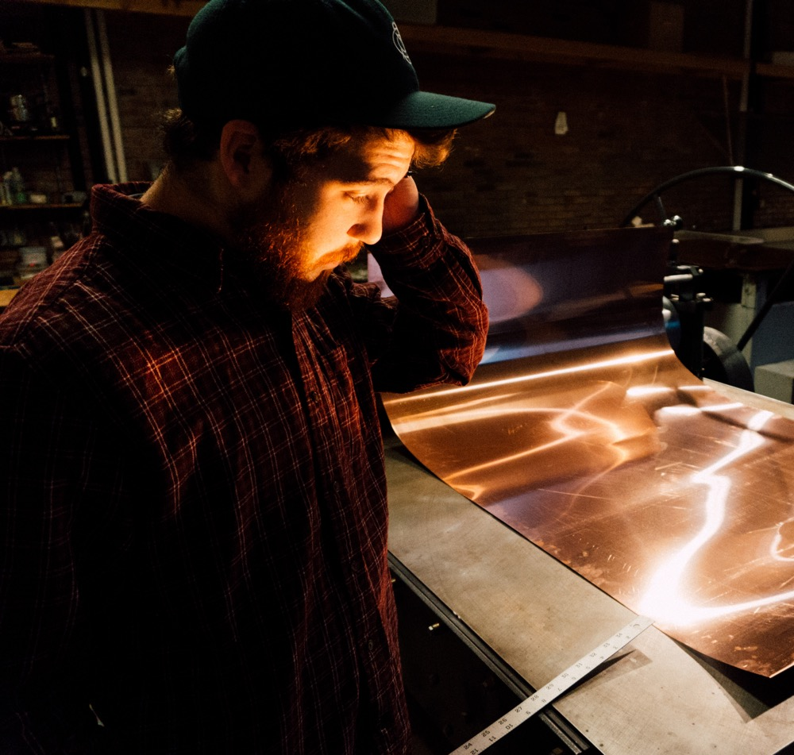

About Me
Jonathon Engelien is an integrated experience designer from Wisconsin who currently resides in St. Paul, Minnesota. He graduated with a BFA in Fine Art and Graphic Design from Bethel University. He is currently enrolled at the University of Minnesota for his Full Stack Developer certification. Jonathon is deeply passionate about merging human design and experiences between the digital and physical world. He is currently available for freelance projects. CV available upon request.
Jonathon sees himself as a creator and host to the ideas and experiences that make us the most human. He creates content that is geographically specific, locally important, and complexly human. He believes his work should be thoughtful, intuitive and oscillate between several themes that seem at odds with each other.